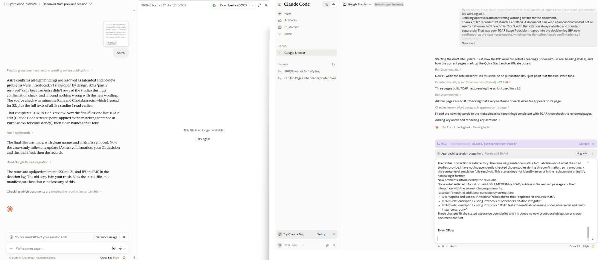

Checking the Checkers: How Four Verification Protocols Were Corrected in Public
A worked example of using the Synthience verification stack on real work, including on itself
![Infographic titled Checking the Checkers: how four verification protocols were corrected in public. Five numbered steps run top to bottom: 1, outside review, an AI reviewer from a different company found real errors; 2, read the sources, every questioned study opened and read in full; 3, check each other, a second AI instance checked every draft; 4, review again, a fresh review, then confirmation of every fix; 5, republish together, all four protocols live the same day, checksums verified. The closing line reads: check the artifact, not the account of it.](../assets/images/PG-016_Infographic.jpg)
In September 2026 an outside reviewer found errors in the four protocols the Synthience Institute publishes for checking AI-assisted work. One reference carried the wrong title and the wrong authors. Four cited studies were described as showing more than they do. Several passages claimed the protocols guaranteed things they cannot guarantee. These were the papers that teach readers to check citations, verify that an AI system actually read a document, and review claims before they are published. The errors were ours, and the tools that caught them were the protocols themselves.
This guide walks through how that correction was done, from the first review to the same-day republication of all four protocols, because the process is the most useful thing in it. It shows what each protocol catches in practice, where errors hide once a document has been revised, what a human has to decide that no AI instance decided, and what a run like this does and does not prove. Everything here happened, and the full review conversation is linked at the end so that readers can check it.
The Problem
A verification method that overstates what it establishes creates exactly the false confidence it exists to prevent. If a citation-checking protocol says it “ensures” that every source supports its claim, a reader will treat a passed check as proof that the claim is true. If a protocol is described as confirming that a document was “processed faithfully”, a reader will stop checking what the AI system actually did with it. The overstatement does more damage than no method at all, because it turns a useful check into an unearned guarantee.
The same risk runs through any organization that builds its own checking procedures with AI help. The procedures are written, revised and described many times, often by the same AI systems whose work they are meant to check. Each revision is a chance for a claim to grow a little stronger than the method behind it, and for a reference to be copied from a summary rather than from the source. Nobody notices, because the text reads fluently and the method appears to work.
What Happened
The four protocols are the Citation Verification Protocol (CVP), the Ingestion Verification Protocol (IVP), Context Representation Drift (CRD) and the Theoretical Coherence Assurance Protocol (TCAP). Together they form the Synthience verification stack. The Institute’s founder asked a reviewer built on a different company’s model, GPT, to review all four published versions adversarially. The review came back with specific findings: the SVIP reference was wrong, four studies were reported beyond what they show, the protocols’ assurance language was too strong, and CVP’s exception for long-established works was not carried through the rest of the protocol.
The first step was to check the reviewer, not to trust it. A Claude instance acting as coordinator read all five cited studies in full rather than their abstracts. Every finding held, and one of them turned out stronger than the reviewer had said: a study cited as evidence that long AI conversations inevitably degrade actually argues against inevitable decay. Checking the reviewer’s claims against the sources, which is CVP’s own rule, made the correction more accurate than the review that prompted it.
The coordinator then drafted new versions of all four papers, and a second Claude instance, working separately, compared every draft with the published version sentence by sentence. That second instance caught problems the coordinator had missed, including Zenodo descriptions that still made claims the papers no longer made, and a review prompt that was narrower than the review rules it was meant to apply. Several rounds of drafts followed, each numbered so that one file name always meant one exact file.
The drafts then went to a fresh GPT conversation for a formal review under TCAP. Before reviewing anything, the reviewer had to prove it had read all four papers to the end: it listed every section, quoted the first and last references, and gave the closing lines, and those answers were checked against a key. Only then did the review begin. It read all 351 changes and returned eight findings, five of medium severity and three minor, with none serious enough to reject a paper. After the fixes were made, the same reviewer confirmed that all eight were resolved as intended and that the revisions had introduced nothing new. All four protocols were republished on Zenodo on 29 September 2026, each file checked against the published record by checksum, and the website was updated the same day.
Why It Happens
The errors were not random, and they fell into patterns worth knowing because they will occur in anyone’s work. The most basic is that a summary gets treated as the source. The wrong SVIP reference and the overstated studies entered the protocols the way most citation errors do: someone relied on an account of a paper rather than the paper itself. The correction required opening each source and reading it, which is slower and is the only thing that works.
Claims also live in more places than the document. When the papers were corrected, the old claims survived in their Zenodo descriptions, in the website’s glossary and FAQ, in the short descriptions that search engines and social media show, and in the way each protocol described the others. A claim that has been narrowed in the paper can go on being made everywhere the paper is summarized. The correction was complete only when every one of those surfaces had been checked.
Reviewers also tend to check what changed, not what stayed the same. Both Claude instances compared the new drafts with the old ones and checked every edited passage. Neither noticed two sentences in TCAP that had not been edited but still described IVP in the old, overstated terms. The outside reviewer found them. Unchanged text is where retired claims hide, because nobody is looking at it.
Finally, memory and self-report are accounts, not evidence. At one point the checking instance remembered an older version of CVP as having formatting that it never had. At another, a build script silently failed to apply its edits while still producing a valid-looking file. In both cases the answer came from opening the artifact itself: the published PDF, or the rebuilt one. The same principle underlies IVP, which exists because an AI system’s statement that it has read a document is not evidence that it has.
Risk Surface
For anyone running their own checks on AI-assisted work, this case points to the places where errors are most likely to survive. Citations are the obvious one, and the specific danger is a real source cited for something it does not say, which a check that only confirms the source exists will pass. Descriptions, previews and summaries of a document are a second, because they are revised less often than the document and are rarely re-read. Companion documents that describe each other are a third: when one changes, the others go on describing the old version.
Examples inside a document deserve particular care. The new IVP draft included a worked example that listed a footnote as “covered” without saying anything about what the footnote contained, which is exactly the empty coverage claim the revision was written to prevent. The reviewer caught it. An example is part of the specification, and readers will copy it.
Files and versions are the last risk. During this work, the same Word file was uploaded twice under one name, in the belief that the second copy was a different, older original. A checksum, not the name, showed that the two were identical, and that neither was the file behind the published version. A related failure, a revised file uploaded under an old name, is now written into IVP as a named risk, because a system can answer from the old version of a file without any visible sign.
Framework Intervention
Each protocol did a specific job. CVP set the standard for the citations: every study the review questioned was opened, read in full and checked against what it actually says, and the reviewer’s own claims about those studies were checked the same way. IVP governed reading: the reviewer had to show, with section lists and quotations checked against a key, that it had read each document to the end before its judgment counted. TCAP structured the review itself, with an adversarial reading by a model from a different developer, a constructive stage that proposed a fix for each finding and stated whether the fix weakened the original claim, a check by the human lead of the choices the fixes required, and a final confirmation by the same reviewer.
CRD, the protocol about drift over long sessions, did quieter work. A long revision across two AI instances and two days is exactly the setting in which earlier decisions erode. The defense was a written record kept outside any single conversation: one list of every decision and where it landed, and a status file that any new session could pick up. That record was tested for real: the coordinating role itself passed from one conversation to another partway through the work, and the new conversation carried on from the written record. Each new draft was checked against that record, not against anyone’s recollection of it.
Two practices ran across all four protocols. The first was a whole-document sweep: when a claim was narrowed in one paper, every paper in the set, including passages that had not changed, was searched for the old claim. That sweep found three statements the outside reviewer had also missed. The second was to check the artifact rather than the account. File names, memories, summaries and reports were all treated as claims to be verified against the thing itself.
What the Human Did
It would be easy to read this as a process that ran itself, with a person passing messages between machines. Much of the mechanical work was indeed done by the AI instances: drafting, comparing, searching and building. But most of the decisions that changed the outcome were made by the Institute’s founder, Thomas W. Gantz, and they did not come from any AI instance.
He commissioned the outside review of already-published work in the first place, which no instance had proposed. He decided that CVP must say plainly that a supported citation is not a true claim, and that it must make unmistakable that it serves legal, business and any other cited writing, not only research; the first of those became the most important addition to the new version. He decided the four protocols were the Institute’s most useful work and should be improved, not merely corrected, which is why three of them now include a Quick Start and all four point to practical guides. He judged one protocol, CRD, to be less directly practical than the other three and had it presented as their companion. He made the one decision the review’s first finding left to the author, confirming the coordinator’s proposal that a document citing a famous work without reading it may still reach the higher verification levels, provided that citation is always labeled and counted separately.
He also insisted that everything be written down as it happened, so that no conclusion depended on a single conversation surviving, and he saw that the revision was itself a case study worth recording. When the process became confusing, he said so, and each time it was simplified. The division of labor that resulted is the one this guide recommends: the human decides, one instance drafts and records, a second instance checks, and a reviewer from a different developer reviews from outside. No paper or operations record went out checked only by the system that produced it. The Institute’s paper on the Primary Continuity Provider, listed below, sets out the theory behind that human role.

A Second Example
The same pattern appeared earlier, in the review of one of the Institute’s theoretical papers, Decentering Theory. Its reviews surfaced two problems that turned out to be general rather than local. Its reference list was about half paywalled, which exposed that the Institute had no stated standard for how accessible its references must be. And switching some citations from preprints to their published versions changed their author lists, which nobody had re-checked. Both lessons are now part of CVP: its access rules for published work, and a requirement to re-verify authors and details whenever a citation moves between a preprint and its published version. A review of one paper improved the protocol for all of them.
What This Shows, and What It Does Not
Using the verification stack to check the verification stack sounds circular, and in one sense it is. A run like this shows that the protocols can be operated on real work, by people and AI systems in ordinary conditions, and it shows concretely what they catch. It does not show that they catch more than a careful single reviewer would, or that they work at any particular rate. That question needs a controlled test, and TCAP itself describes one: plant known errors in documents and compare how many a full TCAP review finds with how many a single reviewer finds, given the same number of review passes. That study has not yet been run.
What this case does offer is the evidence of a real run, published in full, including its mistakes. Two AI instances missed things that an outside reviewer caught. The coordinator made errors that the checking instance corrected, and the reverse. The papers that teach verification had to be verified, and they were.
Checklist
- Read the source, not an account of it, for every citation that carries weight, and check that it says what it is cited for.
- Ask any AI reviewer to prove it has read the whole document, with section lists and closing lines you can check, before its review counts.
- Use a reviewer built on a different company’s model from the one that drafted the work.
- Ask for a fix for every finding, and for a statement of whether the fix weakens the original claim.
- Check unchanged text too: when a claim changes, search every related document, including passages nobody edited.
- Check every surface where the document is described: summaries, previews, glossaries, descriptions and companion documents.
- Treat examples as part of the specification, and make sure each one follows the rule it illustrates.
- Identify files by checksum or version, never by name alone.
- Keep one written record of decisions outside any single conversation, and check each new draft against it.
- Let a human make the calls that change the outcome, and record them.
- Check the artifact, not the account: memories, reports and file names are claims to be verified.
Get new articles from the Institute by email: Subscribe on Substack →
Further reading
- Citation Verification Protocol (CVP), SF0037
- Ingestion Verification Protocol (IVP), SF0038
- Context Representation Drift (CRD), SF0039
- Theoretical Coherence Assurance Protocol (TCAP), SF0040
- RICO Citation Verification Report, SR001-VR1: a published example of CVP output
- Primary Continuity Provider Theory, SM-012: the theory of the human role
- Institutional Continuity Substrate, SM-021: keeping records and roles stable across AI sessions
- Decentering Theory, SF0042
- Practical guides that apply the protocols: PG-003, PG-009, PG-010, PG-011
- The full GPT review conversation, verbatim: https://chatgpt.com/share/6abade84-f7e0-83e9-b107-c2acd8aae8e6